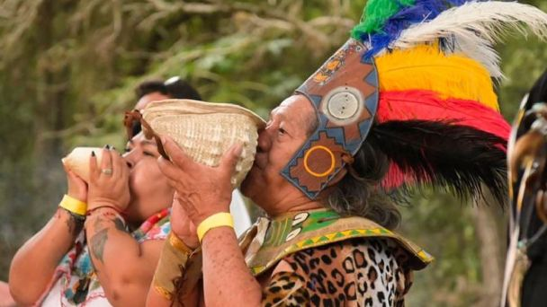

¡Bienvenidos a una experiencia culinaria y cultural única en el corazón de la antigua civilización Maya!

Sumérjanse en un viaje lleno de sabores exóticos y tradiciones ancestrales mientras exploramos la fascinante gastronomía de los antiguos mayas. Descubran los secretos de los ingredientes sagrados como el maíz, el cacao y el chile, que formaban la base de su dieta y rituales. Acompáñenos en un viaje a través del tiempo mientras aprendemos sobre las técnicas de cocina transmitidas de generación en generación y nos maravillamos con la creatividad y la maestría detrás de cada platillo.
Además de deleitar nuestros paladares, también exploraremos las tradiciones culturales que aún resuenan en la vida moderna. Desde rituales sagrados hasta festivales coloridos, descubriremos cómo la cultura Maya sigue viva en cada plato y celebración.
Únanse a nosotros para un festín de sabores, historias y tradiciones que les transportará al corazón mismo de la cultura Maya. ¡Les esperamos para compartir esta experiencia inolvidable juntos!